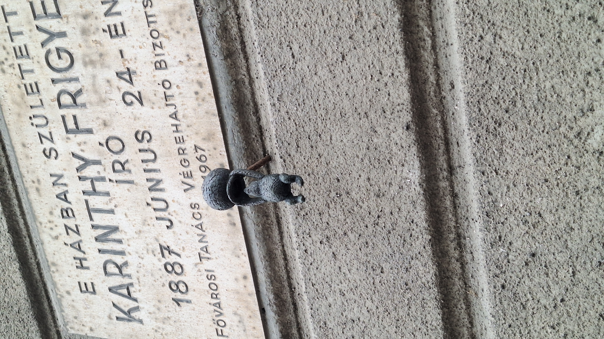

. „Csacsi öreg medvém” – Garfield után egy újabb mesefigura öltött testet Kolodko Mihály által Az alkotás a VII. kerületi Damjanich utca 27. szám alá került, ahol az író emléktáblája áll, aki ebben a házban született. A szobor egy mézescsuprot a feje fölé tartó Micimackót formálja meg, arra utalva, hogy Karinthy fordította le a meseregényt. Pontosabban a nyersfordítást nővére készítette, ő pedig irodalmi formába öntötte a csekély értelmű medvebocs kalandjait. forrás:welovebudapest.hu
